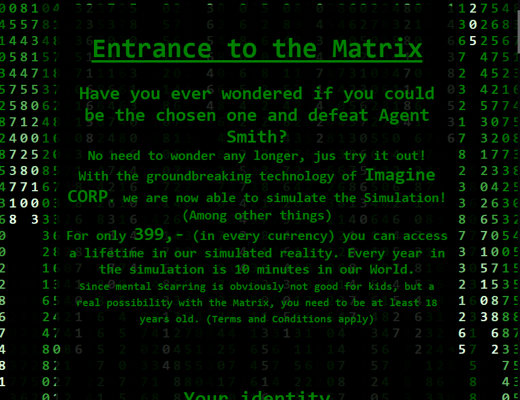
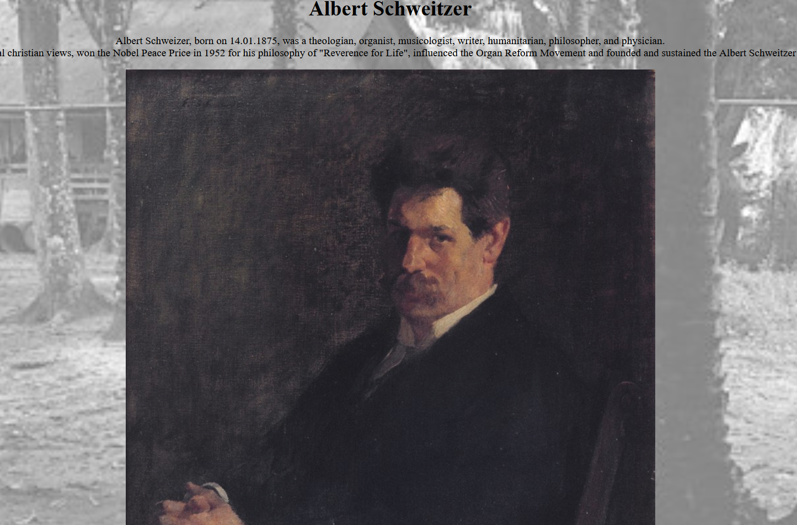
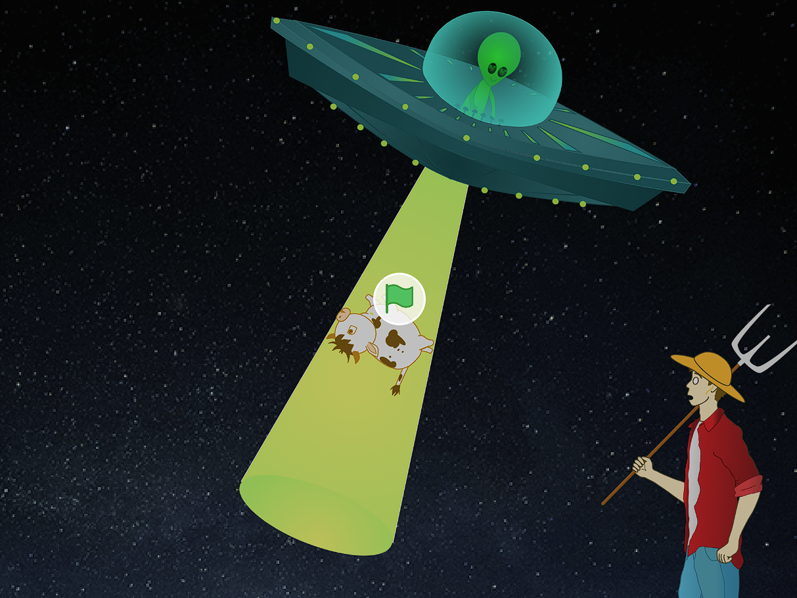

Hi! My name is Michelle.
I live in Germany and am an aspiring programmer.
In my free time i like to play video-games, hang out with friends and i am very new at snowboarding.
It can be quite painful as i have learned, but i still enjoy it a lot!
Currently i attend Harvards CS50 course, this homepage is actually week 8's assignment, how did i do? :).
I tried my hand on a few other projects as well:
Projects
Matrix

I am especially proud of this one. This Webpage was part of the responsive web design certificate from freecodecamp.org.
As part of the assignment, you should try to use only pure CSS and html. The coderain especially was a big challenge and as a result, what could have been a few lines of
code turned into roughly a hundred lines of html and an additional hundreds of lines of CSS, since the numbers had to be styled individually. As you can imagine, the sourcecode
now has a huge block of unnecessary code at the end that could have been avoided. But i am still proud of the result, it came out exactly as i imagined.
Albert-Schweitzer
Another page created for the freecodecamps responsive web design certificate. Albert Schweitzer was actually the namegiver of my high school. If you don't know anything about this man, i strongly recommend the movie "Albert Schweitzer" or "Albert Schweitzer - Ein Leben für Afrika" - as it is called in germany. It is beautifully filmed biopic and shows his life, his achievements and his values. He was truly a hero and a great rolemodel.
Filter
For CS50's week 4 Assignment we implemented a few filters on bmp files with a certain width and height in C. Then in Week 6 we learned how you can program the same
program in way fewer lines of code in python. So i got curious. How would it turn out if i implemented it in java?
And so i did.
The program is not as long as the one i coded in C, but it is not as short as the one we coded in python. The Java file you can find on my github as well.
The readme of that project has a few examples as well, please check it out if you are interested.
If you are curious i did not post my solutions, like the C files, for the courses assignments to my github for obvious reasons.
The only exception is this homepage and the UFcOw-project, since the assignment has very few restrictions, so the solutions may vary a lot.
Therefore it would be quite stupid to copy-paste.
UFcOw

During CS50's first week we were supposed to create a little program in scratch, be it a game, an interactive story or anything else.
What i came up with is a little game with the name "UFcOw", you can try it out here.
You are an alien that had to bring some Kettle from Earth as an assignment for school. But you are no simple alien, you are an achiever!
You want to impress the class and steal as many cows as you can, but be careful, the farmer might not like that all that much.
Other than that i am just another girl trying to find her way in life. ¯\_(ツ)_/¯